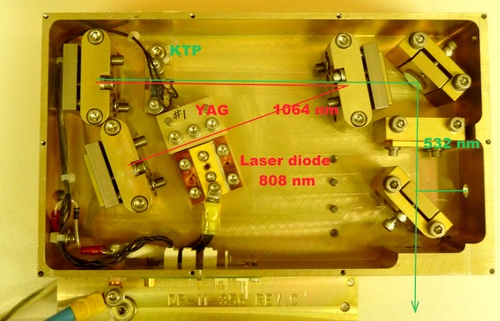

This laser consists of a Nd: YAG crystal of 3x3x10 mm which is pumped by a COHERENT® laser diode of 20 W cw. The diode and the Nd: YAG are mounted on a copper support itself mounted on a TEC to cool the YAG and maintain a constant temperature of the diode so that it emits on the absorption wavelength of the YAG .
The frequency doubling crystal is a KTP itself mounted on a copper block provided with a resistive heating body allowing the phase agreement. There is no intra-cavity q-switch.
If we look at the yield of the doubled laser we see that the yield of the laser diode is 50% YAG Yield 12% and the doubler efficiency of 50% which gives an overall yield of 3%! On the other hand, the gain in spatial coherence is enormous since a laser diode with an M2 = 50 and at the output of the KTP we have a M2 = 1.2 thus monomode!

This optical cavity is of the "V fold"
type. In this type of cavity, the infrared radiation at 1064 nm flows between the Nd: YAG and the KTP. A mirror R max@1064 and a concave mirror Rmax@1064 and AR@532 nm which focuses the IR radiation in the KTP. A third mirror Rmax for the 2 wavelengths returns the unconverted IR radiation in the Nd: YAG resonator. The 532 nm radiation emerges from the laser in TEM 00.